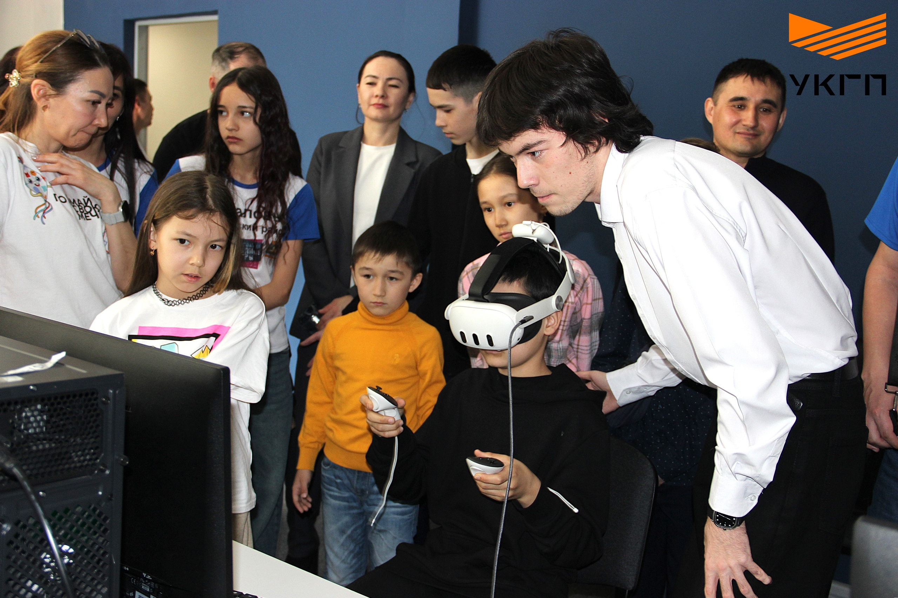
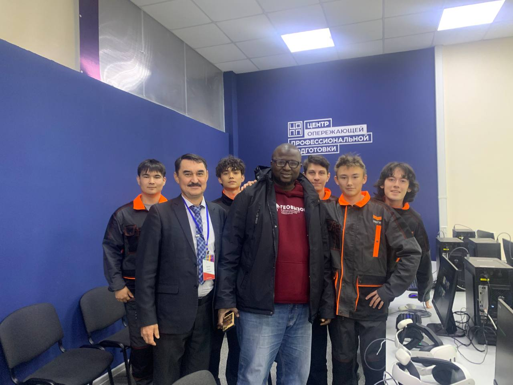

Мои активности

Общественная деятельность
Волонтёрство и помощь сообществу

Работа в ЦОПП
Профессиональный опыт и достижения
Образование
Студент 3 курса ГАПОУ УКГП по специальности «Информационные системы и программирование». Активно изучаю современные технологии разработки, управления базами данных и системного администрирования.
Место работы
Технический специалист в Центре опережающей профессиональной подготовки (ЦОПП). Занимаюсь технической подготовкой мероприятий, решением проблем с программным и аппаратным обеспечением в колледже и самом ЦОППе. Участвую в днях города, открытых дверях, демонстрирую технику колледжа для гостей. Участвовал в Уральском металлургическом горнопромышленном форуме «Наука и технологии» (г. Уфа).
Подробнее о навыках
Программирование
Python, C, C++ (базовый уровень), C# (оконные приложения в Visual Studio 2022, игры в Unity). Создание чек-листов и тестирование приложений.
Базы данных
Проектирование и работа с БД: PhpMyAdmin (MySQL), MS SQL Management Studio. Свободное владение SQL языком.
Аппаратное обеспечение
Ручная пайка схем, работа с платами Arduino и ESP. Понимание электроники и микроконтроллеров.
Веб и 1С
HTML, CSS, JS (создаю сайты с базой данных за 3 дня). Опыт работы в 1С:Предприятие (конфигурирование).
Социальные навыки
Коммуникабельность, работа в команде, презентация техники, участие в форумах и выставках.